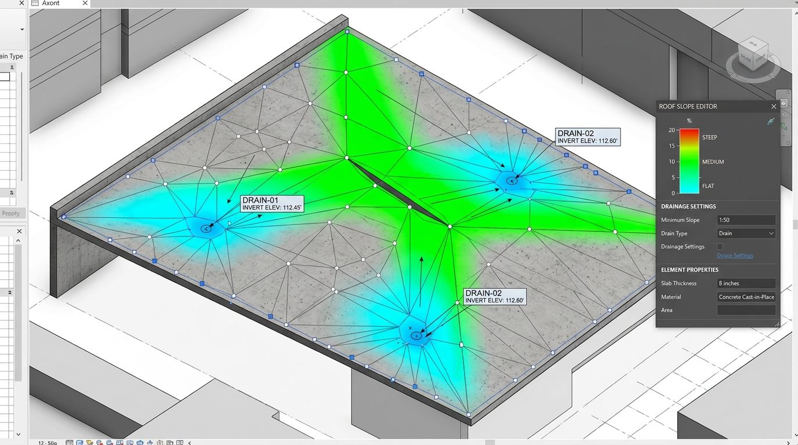

Picks one or more roofs, matches linked-model elements (drains, equipment) against their edges, and generates a section view at each match — with a configurable naming pattern and a preview before anything is created.
Drawing section lines perpendicular to each edge, setting crop depth, rotating section marks to match edge orientation.
Extracts perimeter segments, calculates perpendicular normal vectors, and generates oriented edge section views.

| Section Name | Element | Roof | Status |
|---|---|---|---|
| SEC-ROOF-DRN-01 | Roof Drain — RD-1 | 552011 | Ready |
| SEC-ROOF-DRN-02 | Roof Drain — RD-2 | 552011 | Ready |
| SEC-ROOF-AHU-01 | AHU — Rooftop | 552019 | Skipped — no edge match |